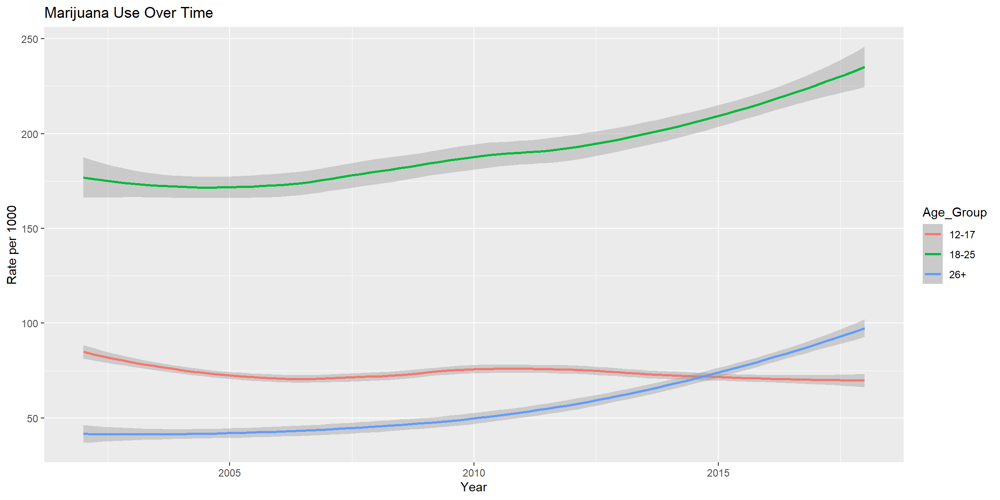
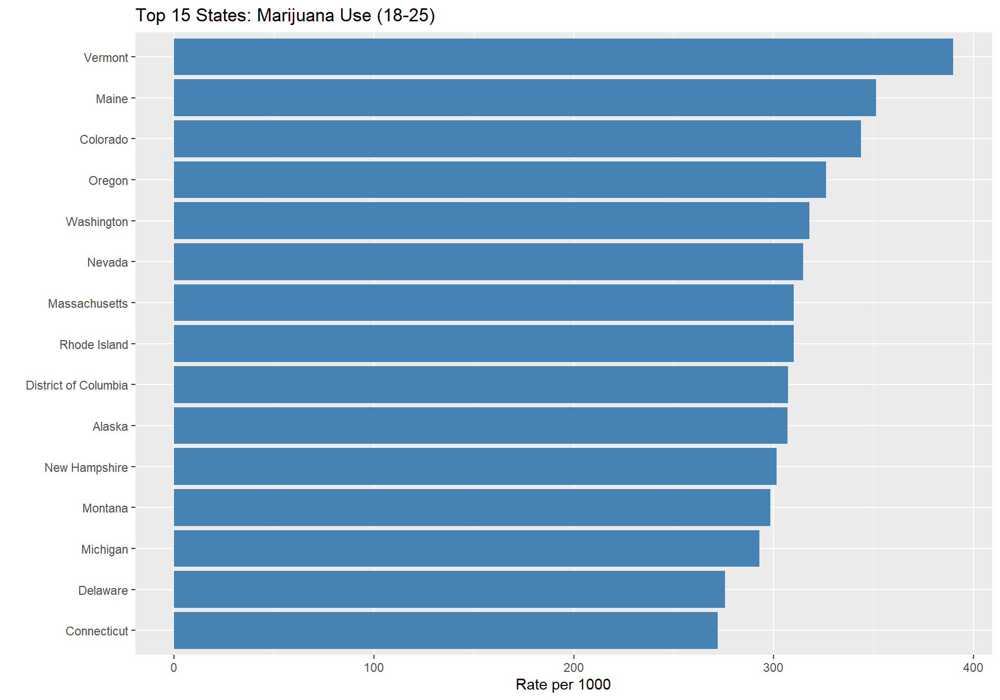
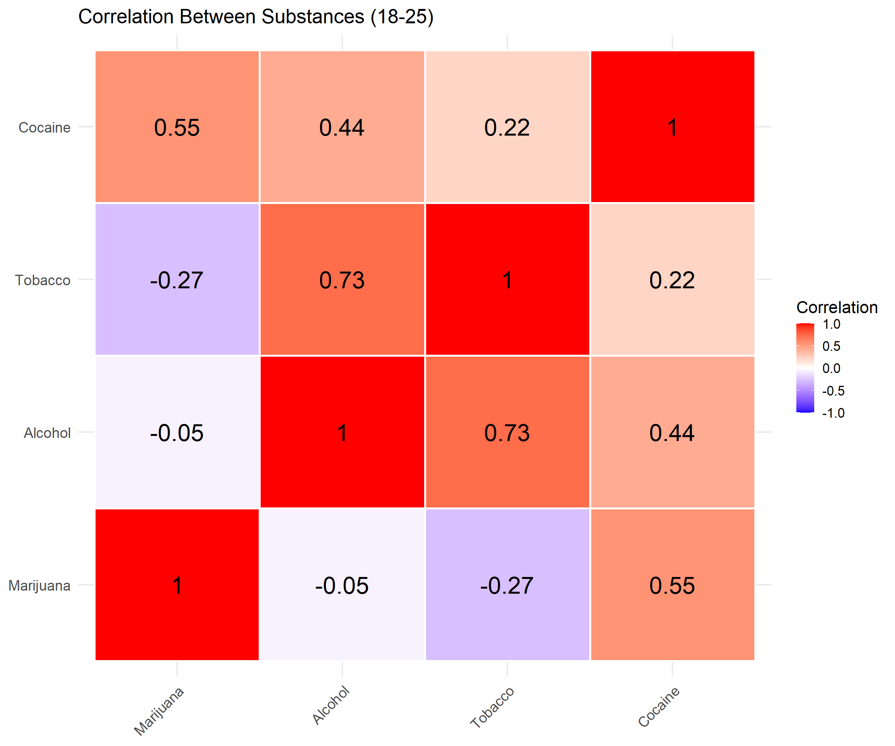
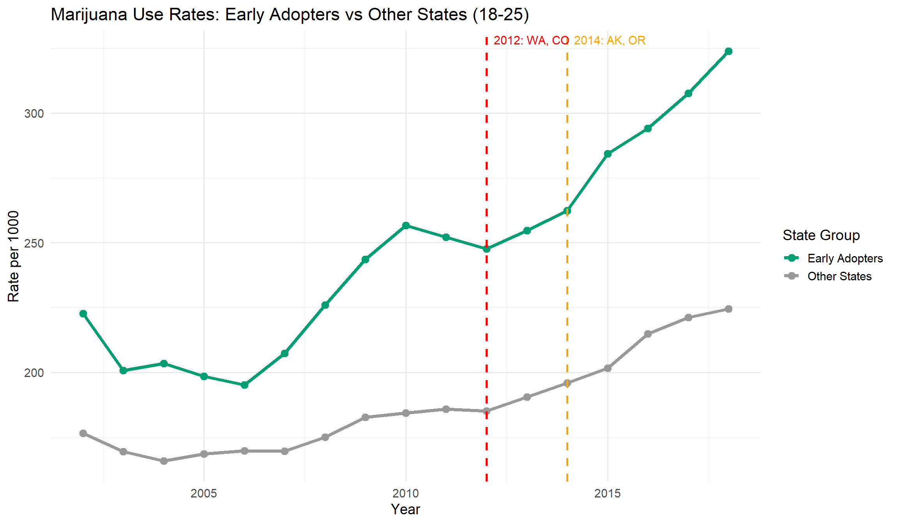
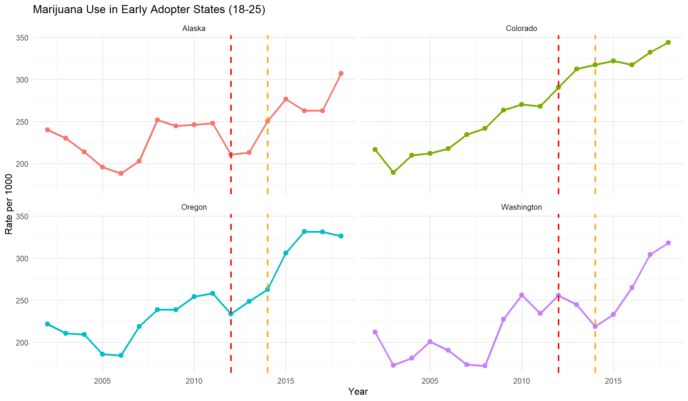
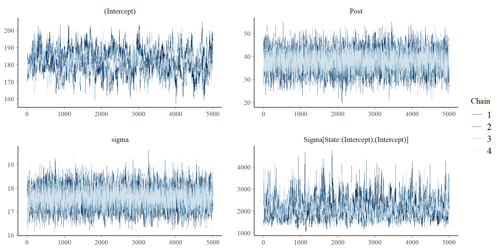
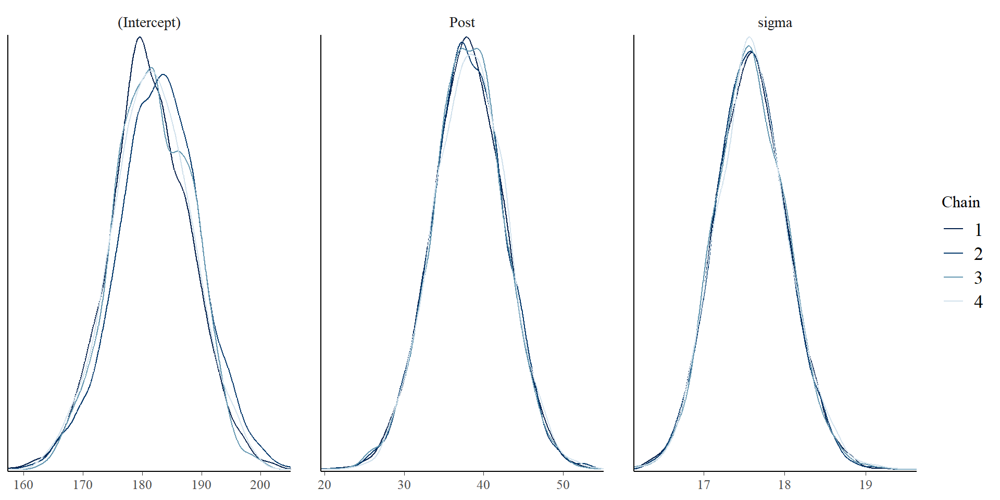
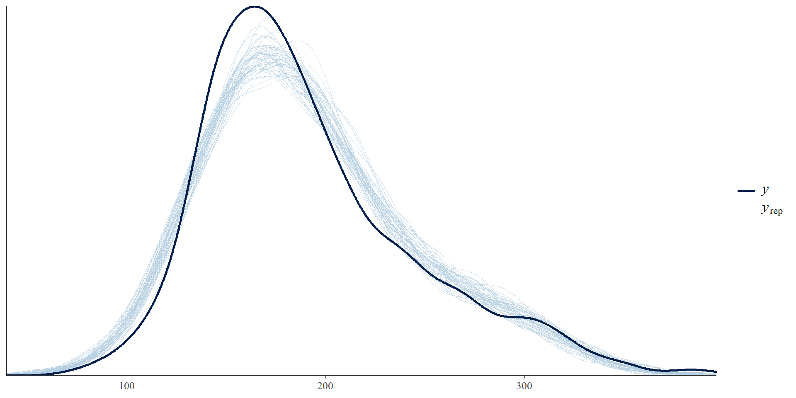

Dimensions: 867 observations × 53 variablesYears: 2002 - 2018 States: 51 (includes Washington D.C.)Stats 115 Final Project
Why should we care about this topic?
Marijuana legalization is a policy issue in the United States that goes beyond red/blue politics, as it reflects family dynamics, community experiences, and personal values.
A key concern is whether legalization is associated with significantly higher marijuana use, especially among young adults.
Who will these results help in the future?
Policymakers can use these results to better understand how marijuana regulation can affect younger demographics.
Public health groups and schools can use this information to better educate and improve prevention efforts.
Individuals can gain knowledge to create more informed opinions.
Dimensions: 867 observations × 53 variablesYears: 2002 - 2018 States: 51 (includes Washington D.C.)Key Variables:
Age Groups:

The 18–25 age group shows an increasing rate over time and remains significantly higher than the other two age groups.
The 18–25 age group shows the highest tobacco usage rate. Rates for all three age groups gradually decline over time, but at different speeds, with the 18–25 group eventually converging with the 26+ group.


Two distinct camps: Cocaine & Marijuana users (r = 0.55) vs Alcohol & Tobacco users (r = 0.73)
Key insight: Marijuana and Tobacco negatively correlated (r = -0.27) - both are smoking activities, individuals choose one over the other
Was early state-level marijuana legalization in 2012 (Washington, Colorado) and 2014 (Alaska, Oregon) associated with higher marijuana-use rates among ages 18–25, beyond the broader national trend?
Our exploratory analysis suggested that marijuana use among 18–25-year-olds rose in the years following legalization. We then asked whether early-adopter states experienced an additional post-legalization increase relative to the broader national pattern, or whether usage was simply rising along with the national trajectory.
Early Adopter States:
Our Analysis:
Compare marijuana usage rates in these 4 early-adopter states vs. all other states to identify:


Pre-2012 Average Rates (per 1000): Early Adopters: 220.58 Other States: 174.73 Difference: 45.85 Post-2014 Average Rates (per 1000): Early Adopters: 294.44 Other States: 211.56 Difference: 82.88 Change from Pre-2012 to Post-2014: Early Adopters: + 73.86 ( 33.5 % increase) Other States: + 36.83 ( 21.1 % increase)Interpretation:
Pre-legalization (before 2012):
Early adopters: 220.6 per 1000
Other states: 174.7 per 1000
Early-adopter states already had substantially higher marijuana-use rates before legalization
Post-legalization (2014+):
Early adopters: 294.4 per 1000
Other states: 211.6 per 1000
The gap widened further in the post-legalization period
Key Pattern:
Early adopters: 33.5% increase (+73.9 per 1000)
Other states: 21.1% increase (+36.8 per 1000)
Because early-adopter states already had higher baseline usage and appear to have been increasing faster even before legalization, this comparison does not by itself establish a causal effect.
The post-legalization divergence is consistent with legalization being associated with higher marijuana-use rates, but part of the difference may also reflect pre-existing state-level preferences and trends.
Answer: Early-adopter states experienced larger increases in marijuana use among ages 18–25 than other states, but the evidence here should be interpreted as associational rather than definitively causal. Legalization may have contributed to the increase, but these states were already different before legalization.
Modeling Strategy:
Because legalization occurred at different times across the treated states, we define a state-specific post-legalization indicator:
\(Post_{it}=1\) if state \(i\) is in a legalized period in year \(t\)
\(Post_{it}=0\) otherwise
This means \(Post_{it}\) already represents the treatment exposure for early-adopter states after legalization. It is effectively a treated × post indicator, so we do not need a separate interaction term such as \(EarlyAdopter_i \times Post_t\) in this model.
We estimate whether marijuana-use rates in ages 18–25 were higher in treated states after their legalization year, while also accounting for:
Let’s run a simple t-test:
\[ H_0:\ \mu_{\text{Early growth}} = \mu_{\text{Other growth}} \]
\[ H_1:\ \mu_{\text{Early growth}} > \mu_{\text{Other growth}} \]
Two-Sample t-test: Early Adopters vs Other StatesMean growth Early Adopters: 34.9 Mean growth Other States: 23.13 t-statistic: 0.85 p-value: 0.2249
Conclusion: No statistically significant difference in average growth was detectedWhy Bayesian?
\[ Rate_{it} \sim \text{Normal}(\mu_{it}, \sigma) \]
\[ \mu_{it} = \alpha_i + \lambda_t + \beta Post_{it} \]
Where:
Why use year effects instead of a linear year trend?
A single linear time term assumes marijuana-use rates changed at a constant national rate over time. Using year effects is more flexible: it allows each year to have its own national shift, which better captures non-linear changes in marijuana use over the sample period.
This is not a slope-interaction model such as \[ Rate \sim Year + Group + Year \times Group \]
Instead, the fitted model estimates a post-legalization level shift through \(Post_{it}\), while allowing each state to have its own baseline level through the random intercept \(\alpha_i\).
Key Parameter: \(β\) (\(Post_{it}\))
If \(β > 0\), then marijuana-use rates were higher in treated states during their post-legalization years, after accounting for:
Because \(Post_{it}\) is defined separately for each state based on its own legalization year, it already serves as the treatment indicator for “treated state after legalization.”
Parameter meanings:
Model Note:
This specification is more flexible than a linear time trend because it does not force national marijuana-use rates to move in a straight line over time.
Posterior Predictive Checks:

The traceplots show good mixing across chains

Density overlays are quite consistent across chains. Intercept chains showed slight variation, but overall the posterior simulation converged well and the MCMC samples are reliable for inference.

Our simulated data from the posterior match the observed distribution and trend quite well. The model captures the main structure of the marijuana-use data reasonably well.
Credible Intervals
2.5% 97.5%
(Intercept) 168.28882 195.14296
Post 29.02367 46.99303Posterior probability
[1] 1Posterior Summary:
\(95\%\) credible interval for \(β\) (\(Post_{it}\)): \([29.02,\ 46.99]\)
\(P(β > 0 \mid data) = 1.00\)
Interpretation: After accounting for state-level baseline differences and year-specific national effects, the estimated post-legalization coefficient remains clearly positive. Under this model, post-legalization years in treated states were associated with an additional increase of about 29 to 47 rate points in marijuana-use rates among ages 18–25. This estimate reflects a post-legalization level shift rather than a different slope over time.
Descriptive Analysis:
Frequentist Test:
Bayesian Model:
Key Insight:
Across all three approaches, early-adopter states showed larger post-legalization increases in marijuana-use rates among ages 18–25. The Bayesian model provides the clearest evidence of a positive post-legalization association, even after accounting for persistent state differences and flexible year-to-year national shifts. At the same time, because early-adopter states already differed before legalization, the result should be interpreted as strongly suggestive rather than definitively causal.
We would collect more detailed data, such as county-level or individual-level data, instead of only state-level averages.
We would use stronger methods to study causality and better separate the effect of legalization from pre-existing state differences.
We would also study other factors like dispensary access, advertising, local policies, and differences across different demographics instead of just age